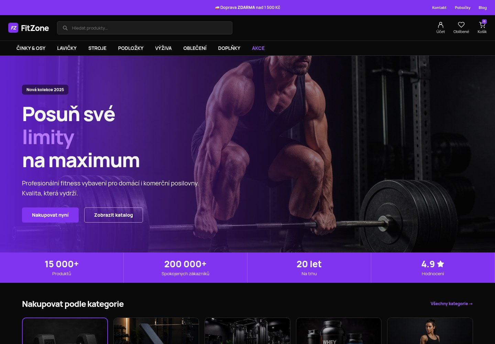
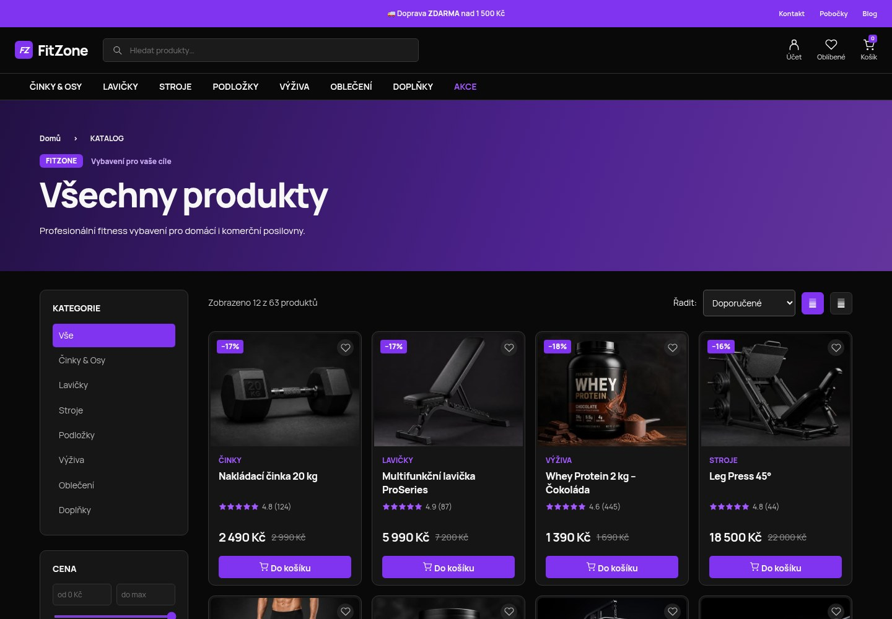
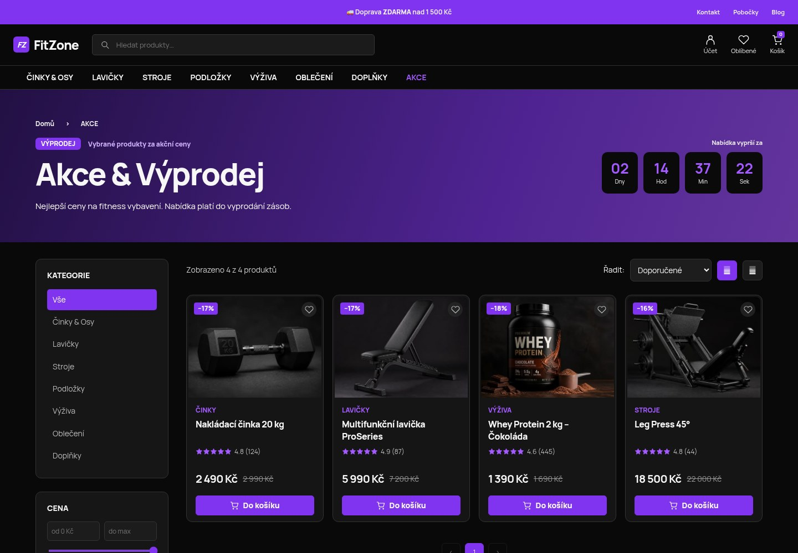
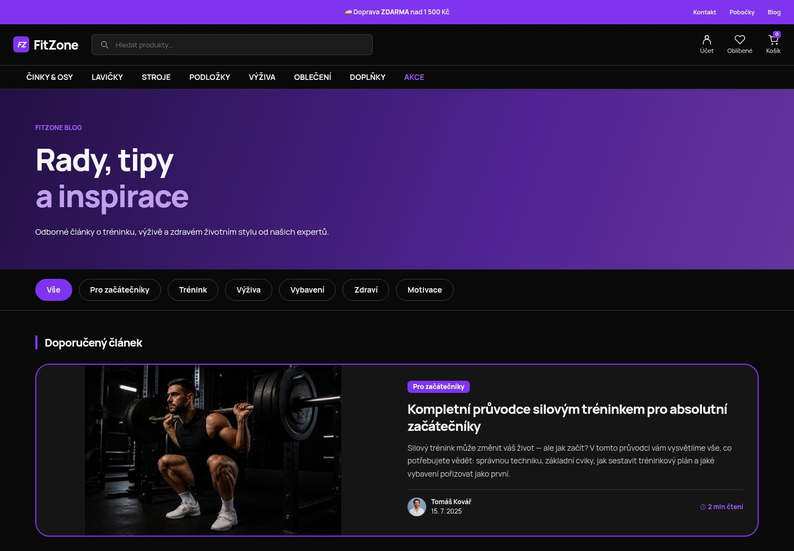

Katalog, který dává smysl
Činky, lavičky, fitness stroje, výživa i oblečení. Vyhledávání, filtry, řazení a stránkování pomáhají najít vhodné vybavení.
FITNESS E-SHOP / PŘEDSTAVENÍ PROJEKTU
Od první činky po vlastní posilovnu. FitZone spojuje fitness vybavení, sportovní výživu a inspiraci do jednoho přehledného nákupního zážitku.

01 / O PROJEKTU
Vlastní česká šablona propojuje výrazný vizuální styl s katalogem WooCommerce. Důraz je na přehledné kategorie, fotografie produktů a snadnou orientaci na počítači i mobilu.
Činky, lavičky, fitness stroje, výživa i oblečení. Vyhledávání, filtry, řazení a stránkování pomáhají najít vhodné vybavení.
Produktové karty navazují na WooCommerce košík. Oblíbené produkty si návštěvník může uložit ve svém prohlížeči.
Akční nabídky a články o tréninku, výživě a regeneraci doplňují obchod o obsah pro aktivní životní styl.
02 / POHLED DOVNITŘ
Skutečné screenshoty lokálního projektu.
Kliknutím otevřete obrázek v plné velikosti.



03 / POD POVRCHEM
WordPress spravuje obsah, WooCommerce produkty a košík. Šablona FitZone jim dává společnou vizuální podobu. Lokální prostředí DDEV a přiložený dump umožňují projekt obnovit.
Přejít na návod ke spuštění ↗PROHLÉDNĚTE SI PROJEKT
Tato stránka představuje projekt a jeho vzhled. Nákupní funkce běží ve WordPressu; pro jejich vyzkoušení spusťte projekt podle README. Platby a newsletter vyžadují vlastní konfiguraci.
{kind=link}
{kind=link}
{kind=link}